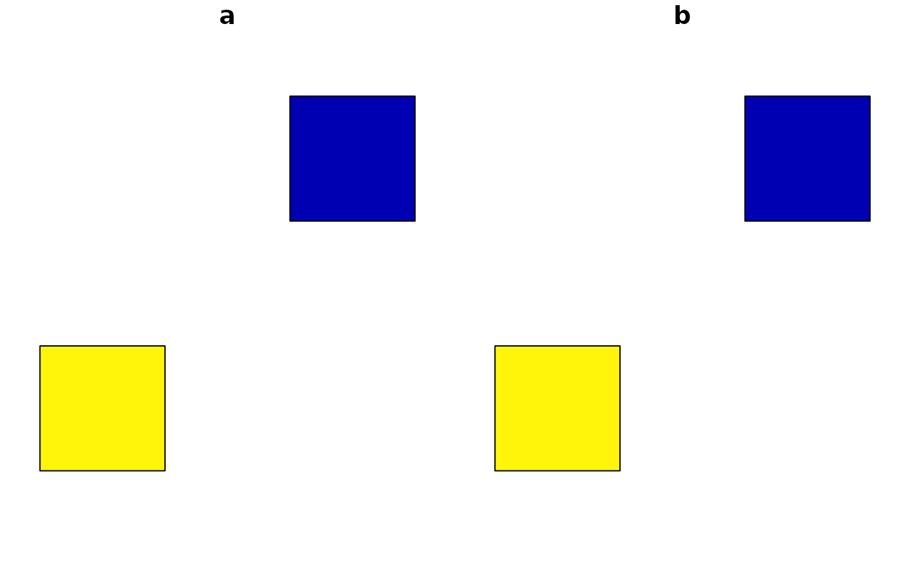

Aggregates using specified field, or all shapes if no field is given. For point layers, replaces a group of points with their centroid.
Usage
ms_dissolve(
input,
field = NULL,
sum_fields = NULL,
copy_fields = NULL,
weight = NULL,
snap = TRUE,
...
)Arguments
- input
spatial object to dissolve. One of:
geo_jsonorcharacterpoints or polygons;SpatialPolygons, orSpatialPoints
- field
the field to dissolve on
- sum_fields
fields to sum
- copy_fields
fields to copy. The first instance of each field will be copied to the aggregated feature.
- weight
Name of an attribute field for generating weighted centroids (points only).
- snap
Snap together vertices within a small distance threshold to fix small coordinate misalignment in adjacent polygons. Default
TRUE.- ...
Arguments passed on to
apply_mapshaper_commandsforce_FCshould the output be forced to be a FeatureCollection (or sf object or Spatial*DataFrame) even if there are no attributes? Default
TRUE. If FALSE and there are no attributes associated with the geometries, a GeometryCollection (or Spatial object with no dataframe, or sfc) will be output.sysShould the system mapshaper be used instead of the bundled mapshaper? Gives better performance on large files. Requires the mapshaper node package to be installed and on the PATH.
sys_memHow much memory (in GB) should be allocated if using the system mapshaper (
sys = TRUE)? Default 8. Ignored ifsys = FALSE. This can also be set globally with the option"mapshaper.sys_mem"quietIf
sys = TRUE, should the mapshaper messages be silenced? DefaultFALSE. This can also be set globally with the option"mapshaper.sys_quiet"gj2008Generate output that is consistent with the pre-RFC 7946 GeoJSON spec (dating to 2008). Polygon rings are CW and holes are CCW, which is the opposite of the default RFC 7946-compatible output. This should be rarely needed, though may be useful when preparing data for D3-based data visualizations (such as
plotly::plot_ly()). DefaultFALSE
Examples
library(geojsonsf)
library(sf)
poly <- structure('{"type":"FeatureCollection",
"features":[
{"type":"Feature",
"properties":{"a": 1, "b": 2},
"geometry":{"type":"Polygon","coordinates":[[
[102,2],[102,3],[103,3],[103,2],[102,2]
]]}}
,{"type":"Feature",
"properties":{"a": 5, "b": 3},
"geometry":{"type":"Polygon","coordinates":[[
[100,0],[100,1],[101,1],[101,0],[100,0]
]]}}]}', class = c("geojson", "json"))
poly <- geojson_sf(poly)
plot(poly)

length(poly)
#> [1] 3
poly
#> Simple feature collection with 2 features and 2 fields
#> Geometry type: POLYGON
#> Dimension: XY
#> Bounding box: xmin: 100 ymin: 0 xmax: 103 ymax: 3
#> Geodetic CRS: WGS 84
#> a b geometry
#> 1 1 2 POLYGON ((102 2, 102 3, 103...
#> 2 5 3 POLYGON ((100 0, 100 1, 101...
# Dissolve the polygon
out <- ms_dissolve(poly)
plot(out)
length(out)
#> [1] 1
out
#> Simple feature collection with 1 feature and 0 fields
#> Geometry type: MULTIPOLYGON
#> Dimension: XY
#> Bounding box: xmin: 100 ymin: 0 xmax: 103 ymax: 3
#> Geodetic CRS: WGS 84
#> geometry
#> 1 MULTIPOLYGON (((102 2, 103 ...
# Dissolve and summing columns
out <- ms_dissolve(poly, sum_fields = c("a", "b"))
plot(out)
out
#> Simple feature collection with 1 feature and 2 fields
#> Geometry type: MULTIPOLYGON
#> Dimension: XY
#> Bounding box: xmin: 100 ymin: 0 xmax: 103 ymax: 3
#> Geodetic CRS: WGS 84
#> a b geometry
#> 1 6 5 MULTIPOLYGON (((102 2, 103 ...